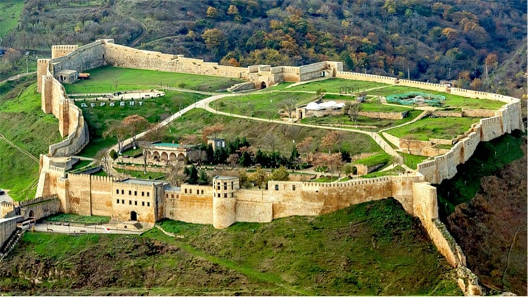

المحتويات
مقدمة
تقع داغستان في قلب شمال القوقاز، وهي جمهورية تابعة للاتحاد الروسي تتميز بفرادتها. عاصمتها، محج قلعة، هي مدينة نابضة بالحياة على شواطئ بحر قزوين، حيث تلتقي الحداثة بالتقاليد القديمة. بمساحة تبلغ 50,270 كيلومتر مربع، تضم هذه الأرض الجبلية والوادي حوالي 3 ملايين نسمة، مما يخلق فسيفساء ثقافي ولغوي مذهل. اللغة الروسية هي اللغة الرسمية، ولكن اللغات المحلية العديدة مثل الأوارية، اللاكية، الدارغينية، والليزغينية تتردد في كل زاوية، مما يذكر بالتنوع العرقي للمنطقة. الإسلام هو الدين السائد، ولكن التعايش السلمي مع الأقليات المسيحية واليهودية هو شهادة على التسامح والاحترام الذي يميز داغستان.
التاريخ
تاريخ داغستان
التنوع الثقافي: مأهولة منذ العصور القديمة، داغستان هي بوتقة تنصهر فيها الثقافات واللغات، مما يعكس تاريخها الغني.
الإسلام: وصول الإسلام في القرن السابع غير المنطقة، حيث اندمجت العناصر الإسلامية مع التقاليد المحلية.
الهيمنة الروسية: في القرن التاسع عشر، احتلت روسيا داغستان، مما أدى إلى تحديثها ولكن أيضًا إلى توليد التوترات والصراعات.
العصر السوفيتي: تحت الحكم السوفيتي، شهدت داغستان تطورًا اقتصاديًا، ولكنها عانت أيضًا من القمع.
الاستقلال: بعد سقوط الاتحاد السوفيتي في عام 1991، انضمت داغستان إلى روسيا، وواجهت تحديات مثل الإرهاب.
الوضع الحالي: تحافظ داغستان على ثقافتها وتقاليدها، وتبرز كوجهة سياحية بمستقبل واعد.
الثقافة والتقاليد
داغستان هي بوتقة تنصهر فيها الثقافات والتقاليد حيث تختلف الموسيقى، الرقص، الأزياء، والمأكولات من مجموعة عرقية إلى أخرى، مما يخلق فسيفساء ثقافي فريد في العالم. الرقصات الشعبية، المليئة بالطاقة والعاطفة، تحكي قصص الحب، الشجاعة، والتقاليد القديمة. الموسيقى التقليدية، مع ألحانها الساحرة وإيقاعاتها النابضة بالحياة، ترافق الاحتفالات والمناسبات، مما يخلق جوًا احتفاليًا ومبهجًا. الأزياء التقليدية، بألوانها الزاهية وتصاميمها المتقنة، تعكس هوية وفخر كل مجموعة عرقية. المأكولات، بنكهاتها القوية والمتنوعة، هي انعكاس لتنوع المكونات والتقنيات الطهوية في المنطقة.
أماكن الاهتمام
دربند
مدينة عريقة على شواطئ بحر قزوين، تتميز بقلعة مهيبة وأسوار مدرجة في قائمة اليونسكو. كنز تاريخي بشوارع قديمة، مساجد، وأسواق تذكرنا بعصور مضت.
وادي سولاك

واحد من أعمق وأطول الأودية في العالم، بمناظر طبيعية خلابة ومهيبة تخطف الأنفاس. نهر سولاك يتلوى في القاع، مما يضفي سكينة على هذا المشهد الطبيعي البري.
قرية كوباتشي

قرية جبلية مشهورة بحرفيتها في الفضة والمجوهرات. سكان كوباتشي هم أساتذة في صناعة الفضة، حيث يصنعون قطعًا فريدة تجمع بين التقنيات القديمة والتصاميم الحديثة.
شلال توبوت

واحد من أعلى الشلالات في روسيا، بسقوط ماء مهيب يتركك في حالة من الذهول. مكان مثالي لعشاق الطبيعة والتصوير.
هضبة غونيب

مكان تاريخي شهد معارك خلال حرب القوقاز في القرن التاسع عشر. يوفر إطلالات بانورامية على الجبال ويضم نصبًا تذكارية تخلد هذه الأحداث التاريخية.
بحيرة كيزينوي-آم

أكبر وأعمق بحيرة في شمال القوقاز، بمياه صافية ومناظر جبلية. مكان مثالي للسباحة، الصيد، والاستمتاع بهدوء الطبيعة.